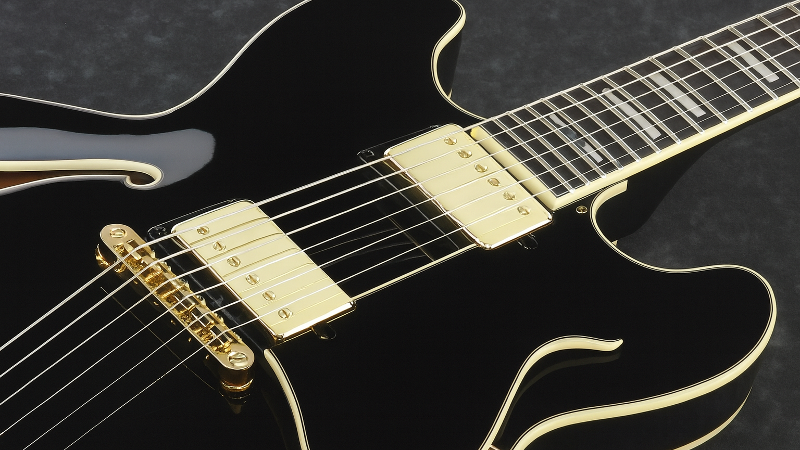

Hey! Looks like you stumbled onto my website. I'm currently a student in community college currently studying software engineering. I signed up for Intro to Web Development to learn more about front-end programming, and I'm really enjoying it! This website is my final project for that class, where I apply everything I've learned into one big grand finale. I've chosen to theme each page based off my interests and hobbies. I'm hoping to one day be famous enough to have a website of my own, so this is kind of like a prototype for that! Click on the links at the top of the page to visit the other pages of my website, or click down below. Take care!
I've built lots of projects to learn and practice programming. I believe the fastest way to learn something is through hands-on experience.
A huge part of my life is listening to and making music. I started playing violin when I was little, but these days I play jazz guitar. Check out some songs that inspire me!

During COVID, I (like everyone else) got into baking. I've collected a bunch of recipes of simple things I love to bake, and I thought it would be nice to have a digital place to keep them.
I don't really have very much of a social media presence, but here are some ways to contact me anyway!